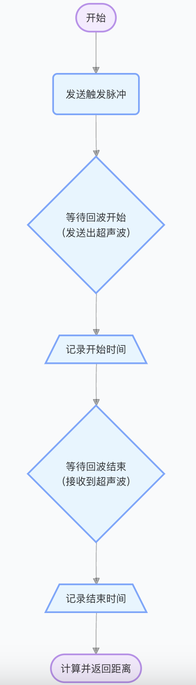

Raspberry Pi + 超声波传感器测距实验
实验目标
- 了解超声波传感器的工作原理。
- 掌握树莓派与超声波传感器的连接方法。
- 编写Python代码实现超声波测距功能。
- 延伸应用
- 坐姿提醒器（距离超限报警）。
- 倒车雷达模拟（距离越近蜂鸣越急促）。
1. 初识超声波
（像蝙蝠一样“看”世界）

人类可以听到每秒振动约20次（低沉的隆隆声）至每秒20,000次（高音调的哨声）的声波。那么，频率超过20,000Hz的声波就是超声波，超出了人类听觉上限。
超声波属于一种机械波，它能通过空气传播并在遇到障碍物时反射回来，非常适合应用在测距和发现障碍物。
蝙蝠发射超声波，遇到目标后产生回波。通过分析回波时间和强度，可以精确判断目标位置。

2. 认识我们的工具：HC-SR04传感器
- 传感器外观：像两个小眼睛（发射器+接收器）。


- 引脚功能：

引脚 作用 连接树莓派 VCC 供电 5V电源 Trig 发射超声波 GPIO 23 Echo 接收回波 GPIO 24 GND 接地 GND - 关键技术参数：
- 测距范围：2cm~4m
- 精度：3mm
- HC-SR04超声波传感器的工作原理
-
1. 超声波发射与接收流程

-
触发信号（Trig引脚）：
当程序将Trig引脚设置为高电平10μs时，发射器会以40kHz频率发射8个超声波脉冲。 -
为什么是8个脉冲？
这种设计能让接收器区分发射信号与环境噪声（如其他超声波干扰）。 -
回波信号（Echo引脚）：
- 发射阶段：8个脉冲发射完成后，Echo引脚立即输出高电平。
- 接收阶段：当超声波遇到障碍物并返回，接收器接收到时，Echo引脚变为低电平。
- 关键测量值：Echo高电平的持续时间 = 超声波往返时间。

-
-
2. 超时机制（无障碍物情况）
- 如果超声波未被反射（无障碍物），Echo引脚会在38ms后自动置为低电平。
- 为什么是38ms？
- 理论最大往返时间（4米障碍物）：23.3ms（计算：8m ÷ 343m/s）。
- 实际冗余设计：考虑声速受温度影响、电路延迟、多路径反射等，预留安全余量。

▲ 无障碍物时Echo引脚超时复位（38ms后变低）
-
| 场景 | Echo引脚信号 | 处理方式 |
|---|---|---|
| 检测到障碍物 | 高电平（持续往返时间） | 计算距离 |
| 未检测到障碍物 | 高电平（38ms后变低） | 返回“无限远”或超时错误 |
3. 动手连接树莓派
- 所需材料：树莓派、HC-SR04、杜邦线。
- 接线步骤：
- 关闭树莓派电源。
- 用杜邦线连接传感器。
【无面包板连接图】

【通过面包板连接图】

- 检查点：
✅ VCC是否接5V？
✅ GPIO编号是否正确？（23和24）
4. 编程实战：测距小实验
- 核心原理：
- 发送超声波 → 碰到障碍物 → 反弹回来 → 计算时间 → 得出距离。
- 公式：距离 = (时间 × 声速) ÷ 2（声速≈343m/s）。


- 基础测距逻辑实现练习：
distance_measure_null - 超时保护逻辑添加练习：
- 当传感器没有检测到障碍物时，echo会一直保持高电平状态，直到超声波往返时间超过38ms，然后传感器会自动将echo引脚置为低电平。我们可以完全依赖传感器的超时吗？
- 别忘了我们38ms的时间长度是在23ms加了很多冗余的。非极端情况下，38ms的时间直接对应6.5m，早就超过了传感器的4m极限。加超时等待可以动态调整超时时间：根据传感器的使用环境和目标距离范围动态调整超时时间。也可以结合其他异常处理逻辑：能对传感器状态进行诊断，或者尝试重新初始化传感器，增强程序的健壮性和稳定性 。
- 传感器损坏时，echo 引脚可能始终为低电平，代码将永远无法退出第一个循环。
- 如果超过38ms没回声，说明“太远或没障碍物”（返回
无限大）。
distance_overtime_null
distance_simple
- 当传感器没有检测到障碍物时，echo会一直保持高电平状态，直到超声波往返时间超过38ms，然后传感器会自动将echo引脚置为低电平。我们可以完全依赖传感器的超时吗？
代码运行
- ssh admin@raspberrypi.local
- nano distance.py （粘贴代码到文件中）
- 保存退出：Ctrl + O → Enter → Ctrl + X
- python3 distance.py
- Ctrl + C 退出
局限与改进
（为什么测不准？）
- 常见问题：
- 传感器与物体/障碍物之间的距离大于4米(13ft)。

- 物体的反射面角度较小，因此声音不会反射回传感器。

- 物体太小，无法将足够多的声音反射回传感器。

- 一些表面柔软、不规则的物体（例如毛绒动物）会吸收声音而不是反射声音，因此HC-SR04传感器可能难以检测到此类物体。

- 另外，如果传感器安装在设备上较低位置，则可能接收到从地板反射的声音。
- 改进思路：
- 多次测量取平均值。
- 调整传感器角度（正对目标）。
5. 创意拓展：坐姿提醒器 + 倒车报警
材料升级
- 基础材料：树莓派、HC-SR04、有源蜂鸣器、 面包板。

引脚 作用 连接树莓派 VCC 供电 3.3V电源 I/O 信号 GPIO 25 GND 接地 GND

功能1：坐姿提醒器
- 逻辑：检测头部距离小于20cm时蜂鸣器报警。
- 代码片段：
if 距离 < 20: GPIO.output(蜂鸣器引脚, GPIO.LOW)
功能2：倒车报警
- 逻辑：距离越近，蜂鸣声越急促（频率渐变）。
- 代码优化：
# 定义警报频率 if distance < 5: # 近距离（0-5厘米） GPIO.output(BUZZER_PIN, GPIO.LOW) time.sleep(0.01) GPIO.output(BUZZER_PIN, GPIO.HIGH) time.sleep(0.01) elif distance < 10: # 中距离（5-10厘米） GPIO.output(BUZZER_PIN, GPIO.LOW) time.sleep(0.05) GPIO.output(BUZZER_PIN, GPIO.HIGH) time.sleep(0.05)
6. 常见问题解答
- 代码报错“GPIO被占用”？
1 切记control+c退出，不要control+z （只是暂时前台退出，后台还在占用端口）
2 取消占用方法：- 查看所有Python进程
ps aux | grep python - 强制终止所有残留进程
sudo kill -9 PID # 根据实际进程ID操作 - 清除所有GPIO占用状态
sudo gpio unexportall # 清理GPIO状态

- 查看所有Python进程
- 蜂鸣器一直响？
- 确认电平模式是否和代码一致
- 确认电源线是3.3V，地线连接准确
教学总结
- 原理：超声波传感器通过发射/接收40kHz脉冲测距，利用声速(343m/s)计算往返时间。
- 核心代码：触发10μs高电平启动测量，记录Echo高电平持续时间，超时38ms返回无限大。
- 接线关键：VCC接5V，Trig/Echo接GPIO，注意避免引脚冲突。
- 局限：最大测距4米，受物体材质、角度影响，柔软/小物体可能无法反射。
- 优化：代码需处理超时和异常，避免进程占用GPIO。
课后作业
1 声速受温度影响（标准大气压下，温度越高声速越快）。若要在代码中动态修正声速，怎么做呢？
2 HC-SR04的替代方案包括激光测距和红外测距。搜索资料，从成本、精度、抗干扰性等角度，分析这三种技术的优缺点。